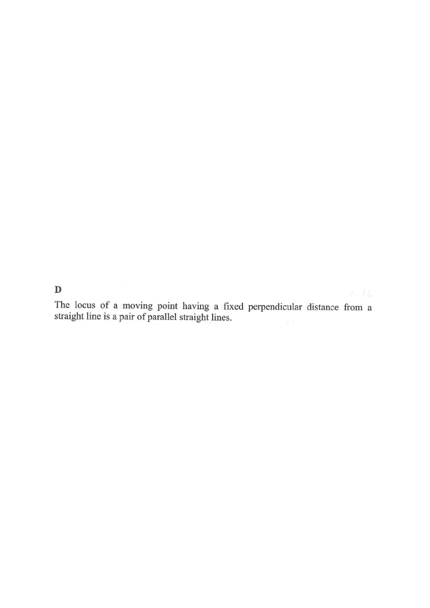

軌跡 · 與直線的距離

$$\frac{|5x-7y-14|}{\sqrt{5^{2}+7^{2}}}=3$$
$$\sqrt{74}=\sqrt{25+49},\qquad |5x-7y-14|=3\sqrt{74}$$
去掉絕對值，得兩條方程：
$$5x-7y-14=3\sqrt{74}\quad\text{或}\quad 5x-7y-14=-3\sqrt{74}$$
兩條直線都平行於 $L$，分別在 $L$ 的兩側，各距 $3$ 單位。
軌跡是一對（平行的）直線，選 D。易錯：以為「距離固定」一定是圓——圓是到定點的距離固定。